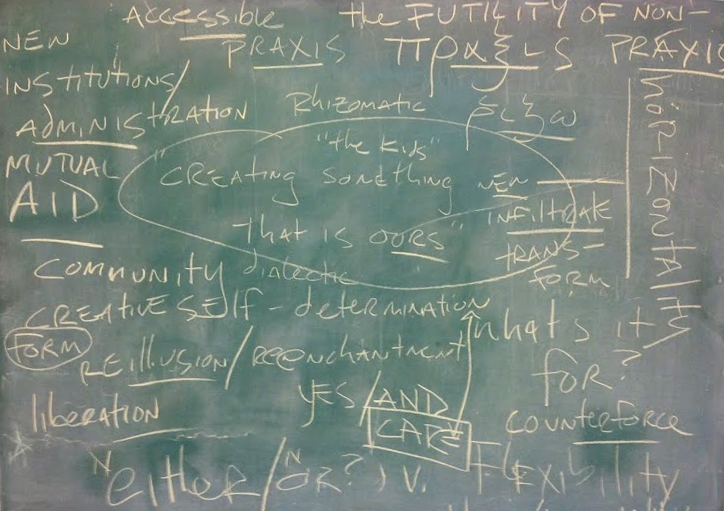

A free school
The Bay Area Public School is an ongoing, evolving experiment in bringing forth radical alternatives to existing institutions. It came into being in response to a collective recognition of the crucial need for free, public spaces in which to engage in the shared exploration, contemplation and generation of new ideas through group discourse, collaborative learning, and creative inquiry.
It is our belief that spaces which are unrestrained by institutional pedagogical models and agendas, which are completely free, which are open to and determined by the public, and which allow for the exchange of ideas and methods, inform the types of creative practices that help us to understand, articulate and respond to the conditions of our own time within a greater historical context. We are of the opinion that the division of study into distinct and separate categories intended to produce “Specialists” and “Authorities” as arbiters of what is culturally and socially valuable, is antithetical to the synthesis required for the development of truly new modes of thinking and being in the world, and, ultimately, for the construction of creative modes of expression necessary to meaningful, considered inquest into prevailing systems, their historical antecedents, and future potentialities.
As a part of this experiment, the Bay Area Public School maintains that all classes, events and resources will always be completely free to all people. We are critical of the prohibitive costs of higher education and, in turn, the exclusion of those unwilling or unable to submit to lifelong debt, from participation in the philosophical, political, and aesthetic discourses which largely mediate the social and cultural content that shapes our world.
